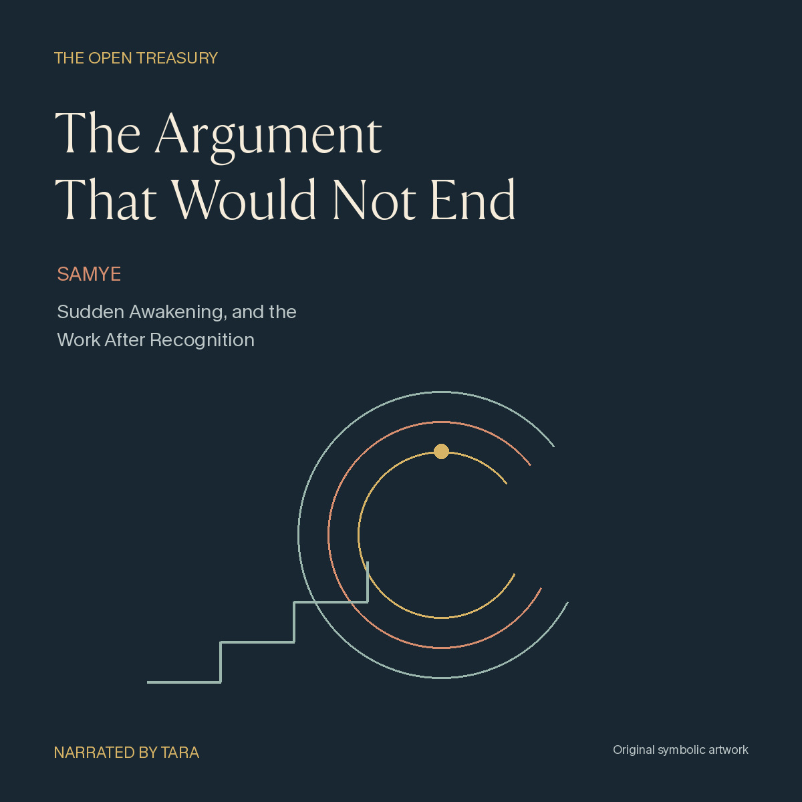

The Argument That Would Not End
Samye, Sudden Awakening, and the Work After Recognition
A 24-chapter original course on Samye, sudden awakening, gradual cultivation, concepts and nonconceptual knowledge, experience, compassion and the work after recognition.
Moving visual edition
Watch or download the original 720p symbolic animation
Chapters
- 00:00 - The argument at the kitchen sink
- 02:11 - A monastery and an empire
- 04:08 - The story and the event
- 06:11 - Who is sitting across the room?
- 08:14 - What could sudden mean?
- 10:16 - What could gradual mean?
- 12:17 - The strongest question from Chan
- 15:18 - The strongest question from Kamalashila
- 17:16 - A thought is not automatically a prison
- 19:11 - A quiet mind can still be mistaken
- 21:07 - Hearing, thinking, becoming familiar
- 23:14 - Why experience still matters
- 25:20 - Does compassion come before or after?
- 27:49 - The student hidden in the doctrine
- 29:50 - When a king wants an answer
- 31:47 - The speaker whose name changes the argument
- 33:47 - The books that did not disappear
- 35:43 - A Chinese witness is not a mirror image
- 37:34 - Do the two sides really agree?
- 39:36 - The trap of a perfect experience
- 41:35 - When gradual becomes tomorrow
- 43:37 - When sudden becomes an alibi
- 45:32 - How to keep a useful disagreement
- 47:29 - The sink is still there
Read alongside the course
Source companion PDF
Detailed sources and reading limits
Complete spoken script
Rights, narration and review
A moment of recognition can happen quickly. What follows may ask for a lifetime of honesty. This course uses the Samye controversy to examine thought and fixation, suddenness and cultivation, nonconceptual knowledge, the contribution of experience, compassion, power, and the work after recognition. Ordinary-life examples are original illustrations, not ancient quotations.
The received Testimony of Ba is a layered narrative, not an eyewitness transcript. Biondo's textual arguments, Adam's philosophical interpretation and van Schaik's Chan research remain attributed. No independent complete reading of all three Bhavanakramas, Tillemans's 2013 essay, the Chinese debate record, Gomez's full chapter or Ding's lecture is claimed. A partial preview or event abstract is not treated as a full reading. The course avoids both blankness/antinomian caricatures and declaring both sides secretly identical.
This is study and reflection, not initiation, a meditation technique manual, individualized spiritual direction or a claim to attainment. No listener is asked to surrender consent, judgment, outside support or the freedom to leave a relationship. Claims about ultimate reality do not excuse ordinary harm.
All 48 original clips received automated wording and signal checks; 16 uncertain clips received independent second full recognition passes, with extra checks and complete retakes 10r1, 16r1 and 31r2 selected. All originals and four retakes are preserved. Script v2 changes only the book title in clip 31 from Dba' bzhed to its established English title, Testimony of Ba, after repeated pronunciation failures. Minor function-word and inflection variations may remain, including disagreement/disagreements in clip 46 and becomes/become in clip 47. Names use approximate English pronunciation. No full human-ear or native-pronunciation certification is claimed.
The listening copy uses fixed +2.5 dB gain and transparent oversampled peak limiting only, with no EQ, other compression, word patches, speed or pitch changes. The final MP3 measures -17.6 LUFS and -1.9 dBTP. Untouched originals and an untouched lossless whole-take master are retained. MP3, M4A and video full decodes passed. All 24 actual encoded chapter designs and 24 motion pairs were visually inspected. Frame rounding places the final visual ending about 1.7 seconds after the audio, without slowing the narration.
CC0 covers only original commentary, synthetic narration and original symbolic artwork insofar as the creator holds rights. Third-party translations, editions and scholarship retain their own rights. No source translation or academic PDF is recited or redistributed, and no source images are used. No support, donation or commercial solicitation accompanies this course. The companion gives exact source URLs, credits and reading limits.
Got a question? Ask Tara - the best listener questions become short answer episodes.
Searchable transcript
Auto-generated pilot, 21 November 2026. This is a selection of ten courses, not a top-ten listening chart. Open-source Whisper recognition, with term-spelling checks and targeted rechecks. Timestamps are approximate. [?] marks a reading to check against the audio before quoting. This is not a certified verbatim transcript or a new translation.
Text · WebVTT · Corrections and uncertainties · Prepared script · Source credits and rights
The source and translator rights stated for this episode apply here too. No new blanket CC0 grant is made.
The argument that would not end. Samye, sudden awakening, and the work after recognition. Chapter 1. The argument at the kitchen sink. You can understand something in a second and spend years learning how to live as if you understand it. You see very clearly that winning an argument is not the same as loving someone. There is relief.
The room feels larger. Then the next morning, someone puts a dirty cup beside the sink, and the prosecution begins. Apparently, the universe has violated the correct procedure for cups. Your insight was real enough to change the evening. Was it unreal because the old reaction returned? Or did you mistake the beginning of something for its completion? That is our own small example, not an ancient Tibetan teaching story.
But it brings us near the pressure inside one of Buddhism's most famous disagreements. Is awakening sudden, or does it grow through gradual cultivation? Does effort uncover freedom, or keep inventing the person who will become free later? If recognition is immediate, what remains to be learned? If learning remains, what exactly happened in the moment of recognition?
The debate associated with Samye in imperial Tibet has been made to answer those questions for centuries. It is often told as a contest between an Indian master of gradual cultivation and a Chinese master of sudden awakening. Sometimes the entire story seems to fit inside a sentence, reason -defeated meditation, or bureaucracy -defeated freedom. Those sentences are memorable.
They are also too small for the evidence, and too small for either side's best question. This course will distinguish the received stories, the surviving arguments, and our own applications. We will not stage an invented ancient conversation and call it history. We will not teach an advanced meditation method. We will ask what thought can do, what experience can prove, and why compassion does not become optional when a view becomes profound.
The aim is not to make both sides secretly identical. It is to become difficult to fool, including by the side we most want to win. Chapter 2. A monastery and an empire. Samye belongs to the world of the Tibetan Empire in the 8th century. The ruler, usually called Trisong Detsen appears in Buddhist histories as a major royal patron. Samye became a landmark of the new Buddhist institutions.
But a monastery is not only a place where someone sits quietly. It needs buildings, food, training, books, translators, rules, and people empowered to decide which teachers will receive support. An argument about awakening can therefore also become an argument about the shape of a society. This does not mean that philosophy was a disguise, and everyone really wanted property. That would be another cheap answer.
People can care sincerely about liberation and also need a room in which to teach it. A ruler can support religious learning and also care about public authority. The question is, how those motives become entangled? Not which single motive allows us to stop thinking about the rest. The received Tibetan narrative places Chinese and Indian Buddhist teachers within that imperial setting. It gives the king an important role in deciding between positions.
Yet the historical details, dates, participants, and shape of the encounter are not equally secure. A famous event can acquire a clearer outline in later memory than it had in the evidence that survives. We will therefore use the broad setting without pretending to possess the minutes of a perfectly documented conference. Keep one distinction close. A royal decision can determine who is permitted to teach.
It cannot by itself determine the truth of a claim about mind. If the losing side leaves the room, the philosophical question does not leave with it. It may return, in another school, another vocabulary, or a person who has never heard of Tibet. Can deliberate cultivation bring an end to delusion? Can trying to end delusion become another form of it? No imperial seal is large enough to close those questions for everyone.
Chapter 3. The Story and the Event One important witness is the testimony of Ba, known in different forms by Tibetan titles, including Dba' bzhed. We use the translation by Michael Willis and Tsering Gonkatsang in the open scholarly volume, Bringing Buddhism to Tibet. Its account is valuable. It is also a narrative with a history.
The book studies show why we should not treat every speech as something recorded while the speaker was talking. Manuscripts can preserve older material while arranging it inside a later argument. The scholar Serena Biondo examines how the debate narrative draws together different materials. Much of its philosophical exchange closely parallels an opponent's position and a reply in Kamalashila's third stages of meditation. [?]
That observation matters. It means that a passage can be evidenced for a philosophical controversy without being a transcript of the famous encounter. The relation between the texts and the historical identity of the unnamed opponent in the philosophical work still require argument. There is no need to swing from unquestioning belief to the announcement that everything is fake. A later account can preserve real names, remembered conflicts, inherited arguments, and the concerns of its compilers. [?]
Those are different kinds of evidence. A family story may tell you something true about a grandparent while also telling you what the family needed that grandparent to represent. The responsible question is not merely whether to believe the whole story. It is which claim this particular witness can bear. Throughout the course, listen for the difference between the received account says, a modern scholar argues, and here is our own interpretation.
Those small phrases are not decorative caution. They keep one kind of confidence from borrowing the authority of another. We can learn from a story without pretending that it's narrator had a microphone in the room. We can take a philosophical argument seriously, even when the story of its public victory has become more elaborate than we can verify. Chapter 4 Who is Sitting Across the Room? The Indian teacher is usually called Kamalashila.
He is associated with Shantarakshita's intellectual world, and with the works called Stages of Meditation, or Bhavanakrama. Those works defend a path involving ethical conduct, compassion, understanding, and cultivation. Calling him the gradualist is convenient, provided we do not imagine a man whose highest ambition was to keep everyone studying forever. The point of his argument is liberation, including a form of knowing that is not merely conceptual.
The Chinese teacher is usually called Moheyan. Tibetan sources often call him Heshang, a title for a Buddhist monk, not a personal surname. His position belongs to the complicated history of early Chan. That history does not divide neatly into the later slogans a modern listener may bring to it. Sudden does not automatically mean effortless. Chan does not automatically mean the absence of training. Chinese does not mean that everyone from China held one position.
Sam Van Schaik's studies of Tibetan Chan materials are especially useful here. They allow us to hear evidence that does not fit neatly into the later portrait of a Chinese villain defeated once and for all. They also require limits. These are surviving texts and fragments, not unrestricted access to Moheyan's intentions. We are using published scholarly presentations, not claiming an independent reading and comparison of every Tibetan and Chinese manuscript.
It is tempting to turn the two teachers into personalities before understanding their questions. Kamalashila becomes the stern examiner. Moheyan becomes the smiling rebel. Then the listener chooses whichever character resembles the person they wish to be. Resist that little casting decision. The most interesting version of the disagreement gives each side something you need and something that should make you uncomfortable.
The teacher who warns you against endless conceptual activity may be protecting you from a genuine trap. The teacher who asks whether your certainty is justified may be protecting you from another one. Chapter 5. What could sudden mean? Sudden can name the way an understanding arrives. You fail to see a pattern, then see it. The transition does not feel like possessing 40 % of an answer and then 41.
Something reorganizes. But the word can also name a teaching strategy, a claim about the nature of awakening, or a contrast with a staged account of the path. Those meanings are related without being interchangeable. A debate becomes confused when one person means the entry and another means the whole journey. This is not permission to solve Samye by importing a later formula and announcing that everyone always agreed with it.
Early Chan sources are varied. Their use of immediacy must be understood in their own settings. The narrower point supported by the materials discussed by Van Schaik, is that a serious sudden teaching need not be the cartoon instruction to stop all thoughts and then do whatever you like. Recognition and the rejection of grasping are not automatically hostility to every form of learning. Consider an ordinary distinction.
Realizing that you have been reading the wrong map can happen immediately. Learning the streets does not therefore happen immediately. That is our analogy, not evidence about an ancient doctrine. It helps isolate a question. Does a moment of recognition change one's orientation without exhausting every consequence of that change? Some accounts of awakening will answer that differently from others.
We should let them, rather than forcing them into a slogan because the slogan feels generous. The attraction of suddenness is morally serious. It challenges a spiritual economy in which freedom is always postponed until you have completed another requirement. It asks whether the seeker is trying to purchase what cannot be acquired as a possession. But a powerful challenge is not a blank check. [?]
We still need to ask what is recognized, how error is distinguished from insight, and what follows when the person who speaks of freedom continues to harm someone who cannot safely disagree. Chapter six, what could gradual mean? Gradual can name a causal path. Certain capacities become more available through conditions. Learning, correction, and familiarization.
In Kamalashila's account, awakening is not the manufacture of a permanent spiritual self. The path is meant to remove ignorance and its effects. An account of conditions is, therefore, not automatically an account of acquiring a bigger, better owner of experience. A person can reject a fixed self and still think that understanding has causes. Our everyday use of learning is helpful, although it does not prove a Buddhist philosophy.
You can understand that an apology should not contain a concealed accusation. Being able to apologize that way when you are frightened or ashamed may take more than intellectual agreement. Practice here does not mean making the sentence true through repetition. It means changing the conditions under which you can act on what you already partly understand. The gradualist danger is equally real.
Preparation can become a respectable way of never arriving. Another text, another qualification, another comparison of maps. The future self who will finally be ready becomes a remarkably successful business. Any challenge to that delay is dismissed as impatience. A living path becomes an endless induction course for a job no one is ever allowed to start. But we should criticize that danger without attributing it to every defender of cultivation.
Kamalashila is concerned with how liberation becomes possible, not with making postponement sacred. The question to carry forward is more exact than sudden versus slow. Which activities reduce confusion and which merely keep it employed? A brief recognition can become vanity. A long discipline can become avoidance. Time -taken is not a sufficient measure of either wisdom or error.
We need to examine the relation between what a person sees and what their way of living makes possible. Chapter 7. The Strongest Question from Chan The sharp question directed at conceptual cultivation is this. If the problem includes our habit of making and grasping distinctions, how does more conceptual activity free us? You can build an extremely sophisticated account of emptiness and still defend it with the possessiveness of someone defending a parking space.
The vocabulary has changed. The contraction around being right has not. The fact that a thought concerns liberation does not make the thought liberating. The third stages of meditation presents an opponent who objects to activities that continue the movement of conceptual construction and karmic involvement. We should not silently turn that opponent into a complete, unfiltered recording of Moheyan.
Biondo's textual analysis is one reason for caution. Nevertheless, the philosophical pressure is intelligible. If a method depends on the very thing it proposes to overcome, the defender owes an explanation of how that works. There is no need to assume that every distinction has the same effect. A concept can make a thing seem more fixed than it is. Another concept can expose that fixation.
If I take a job title to name someone's permanent essence, an examination of how that title depends on an institution, a history, and other people's recognition can loosen the assumption. The examination uses language without requiring the title to become a self -existing thing. This is our ordinary illustration of a possibility, not a substitute for Kamalashila's full argument.
The deeper Buddhist claim in Adam's reading concerns the selflessness of persons and phenomena. Insight discerns the absence of the independent reality that ignorance assigns to them. This is different from installing a new, indestructible object called emptiness behind the things we used to believe in. A critic can still ask how conceptual examination becomes direct understanding, but the defender has at least identified a function for concepts other than building another metaphysical possession.
Kamalashila's answer cannot simply be that his concepts are the good concepts because he likes them. He needs a distinction between conceptual activity that strengthens mistaken assumptions and conceptual activity that loosens them. Is that distinction coherent? Can an examination undermine their reification it initially uses language to identify, or will the mind keep moving the furniture inside a room it never leaves?
These questions are worth allowing to hurt a little. A person who loves books can mistake the accumulation of explanations for a reduction of confusion. A person who loves silence can mistake the absence of an objection for an answer. Neither preference settles the issue. The Chan Challenge asks us to inspect the appetite inside our understanding. Are we using a teaching to become less captured?
Or to become the sort of person who owns the best teaching? If the second process is happening, another hundred pages may simply provide a larger storeroom. 8. The Strongest Question from Kamalashila. Kamalashila's Challenge is just as direct. Why should the absence of conceptual thought amount to liberating knowledge? Something can be quiet without being wise.
If the problem is a mistaken understanding, removing the noise is not obviously the same as correcting the mistake. An account of liberation needs to explain what ignorance loses, not merely what mental activity becomes less noticeable. Martin Adams' study of the Stages of Meditation helps bring out this issue. Both sides, as he reconstructs the philosophical problem, value a kind of non -conceptual, liberating understanding.
They disagree about the conditions that lead to it. The gradualist must explain how conceptual discernment can contribute to what is no longer conceptual. The critic of analysis must explain why the proposed alternative is knowledge rather than mere absence, suspension, or another state that leaves the central error intact. This criticism should not become a lazy accusation that Chan means blankness.
Surviving materials associated with Moheyan complicate precisely that picture. A criticism in an opponent's text and the opponent's own best self -description are not the same thing. To understand the disagreement, we need both the force of Kamalashila's objection and the possibility that its target has been compressed or sharpened for argument. The modern usefulness is easy to recognize. Someone says they felt no division for a while.
That may describe something important. It does not yet tell us which interpretation is justified, whether the experience can be repeated or what changed outside the experience. Someone else says they can prove there is no independent self. That may be an impressive argument. It does not yet tell us whether fear and cruelty have become less compelling. The point is not to dismiss either report. It is to stop one kind of achievement from quietly answering a different question.
Chapter 9. A thought is not automatically a prison. We often speak as if thought were a single substance. Too much of it produces suffering, so less of it must produce freedom. But planning a safe journey, replaying an insult, checking an argument, and deciding to ask for help are not interchangeable simply because each involves thought. If we fail to distinguish their functions, the recommendation to go beyond concepts can become a reason to abandon discrimination, exactly when discrimination is needed.
The materials discussed by Van Schaik help separate non -attachment from accrued campaign against mental events. We are not going to turn those materials into a meditation recipe. The conceptual point is enough. A thought arising and a person becoming bound up in it are distinguishable questions. A position concerned with grasping need not recommend violence against every thought, nor does a defense of analysis require approving every train of association that happens to pass through the mind. [?]
Here is an ordinary example of our own. You notice that a colleague has not replied. A thought appears. They are annoyed with me. You can turn that possibility into a settled identity for them and a whole future for yourself. Or you can recognize that it is a possibility. Check the facts, if needed, and leave room for another explanation. The difference is not simply between having a thought and having none.
It concerns how the thought is being used. This does not establish the historical meaning of every chan term. It prevents an avoidable modern confusion. If you are told that questioning a teacher is merely conceptual, ask why the teacher's instruction escapes the same criticism. If every objection is a symptom of delusion, the claim has made itself immune to correction. That is a power arrangement.
Whatever spiritual language surrounds it. A view that questions fixation should be able to question the fixation around its own authority. Chapter 10. A quiet mind can still be mistaken. Intensity can feel like evidence. An experience is unusually clear, unusually peaceful, or unusually free from ordinary self -concern. It seems too direct to be wrong.
But the fact that an experience occurred, and the truth of the interpretation placed on it are different claims. You may be certain that something happened while remaining mistaken about what it proves. Respecting experience does not require surrendering that distinction. Adam's discussion of Kamalashila engages the Buddhist problem of vivid but unreliable cognition. In his account, cultivation needs a relation to understanding and reliable examination.
It cannot be validated merely by the force with which its contents appear. This is a philosophical account within a Buddhist tradition. We should not dress it as a claim that modern science has confirmed every part of the path, or that a contemporary brain scan could settle an ancient dispute about liberation. The opposite mistake is to decide that, because experience can mislead, experience contributes nothing.
That would make understanding strangely weightless. There is a difference between knowing that a fear is not justified, and finding that the fear no longer runs the room. The difficult question is how that change relates to truth. Does it simply make an earlier conclusion more available? Does it disclose something that reasoning alone cannot provide? We will return to the scholarly disagreement, rather than pretending it has disappeared.
For now, keep a modest rule. Do not let the brightness of a moment to all the work of interpretation. A clear experience can deserve careful attention without becoming a universal credential. It need not certify a cosmology, establish a teacher's moral authority, or tell someone else what they must consent to. The freedom to ask what an experience means is part of taking it seriously. Awe is a poor substitute for a question that has not yet been answered.
Chapter 11, Hearing, Thinking, Becoming Familiar. A central structure in Adam's reading is the traditional sequence of wisdom associated with hearing or study, reflection and cultivation. The stages are not competing departments, one for people who like books and another for people who prefer cushions. They concern a deepening relation to what is understood.
You first receive an account. You examine it. What survives examination must then become more than something you can repeat while conditions are easy. Imagine, as our own example, learning that a certain kind of joke hurts a friend. Hearing the report gives you information. Thinking may uncover the excuses through which you have protected yourself. They are too sensitive, everyone jokes that way.
I meant something else. Learning to respond differently when the same social pressure returns is another matter. This example does not equate ethical correction with the Buddhist path. It makes the difference between receiving, examining and becoming familiar, more concrete. In Adam's interpretation, cultivation is not simply the cessation of reasoning. The relation between tranquility and discerning understanding matters.
Nor is discerning understanding merely the ordinary mental chatter of a person rehearsing a debate. The conceptual and non -conceptual distinction cannot be mapped cleanly onto noisy and quiet. A silent assumption can remain unexamined. An explicit question can loosen it. There is something encouraging here. You do not have to despise your capacity to think in order to notice its limits.
You do not have to pretend that a good explanation is already transformed every habit. Each kind of work can reveal the limitations of the others. Study can prevent a powerful experience from being badly interpreted. Experience can expose how little an elegant argument has penetrated. Reflection can keep familiarization from becoming the repetition of an error. The path on this reading needs a conversation among capacities rather than a campaign to let one capacity rule alone.
Chapter 12, Why Experience Still Matters. Adam is responding in part to an interpretation associated with Tom Tillemans. We have read Adam's paper, not independently read the whole Tillemans essay he discusses. That limit matters. As Adam presents the disagreement, Tillemans places the decisive test of truth with philosophical examination. Meditation does not independently discover additional truths so much as deepen or reinforce a rationally established understanding.
Adam argues that this gives too little weight to cultivation's contribution. Adam identifies ways in which cultivated experience can matter to knowledge, including experiential grounding, the removal of doubt, and a necessary role in the emergence of non -conceptual understanding. These are not claims that any deeply felt experience is true. His account preserves continuity with earlier examination, nor does the paper magically remove every difficulty.
It acknowledges open questions about certainty and about the relation between experience and the theory that has guided it. That remaining problem is important. If a method trains someone to experience what a theory predicts, how do we distinguish discovery from successful conditioning? If reason alone has already settled everything, why is the resulting experience indispensable? It would be convenient to give a final answer in a warm voice.
Convenience is not enough. We can state the tension clearly without claiming that one article has brought the entire history of Buddhist epistemology to a close. What should change for a listener? Perhaps the way we ask about an experience. Instead of deciding between trust it completely and dismiss it completely, ask what kind of claim it supports. It may show that your ordinary self -description is less compulsory than you thought.
It may show that a habit can loosen. Those observations matter. They do not automatically decide every metaphysical question. Respect grows more precise when it is no longer required to be total. An experience can change your life without becoming an answer to everything anyone could ask. Chapter 13. Does compassion come before or after? The ethical issue cannot be postponed until the clever part is finished.
If someone says that ordinary good actions belong only to people who do not yet understand, we need to know what prevents that claim from becoming permission for indifference. Does a non -conceptual view make generosity unnecessary? Does the end of grasping mean the end of concern for suffering? Or does it change the way compassionate activity is understood? The polemical opponent in the third stages of meditation is presented as restricting the value of wholesome conduct in a radical way.
But Van Schaik's presentation of materials associated with Moheyan complicates a blanket accusation that the Chinese teacher simply rejected the perfections, or all conventional ethical activity. We should preserve that complication. An opponent's strongest accusation is not a neutral summary of the other person's position. More specifically, the Moheyan materials presented by Van Schaik distinguish the conventional value of the perfections from the ultimate standpoint in which practices cannot be treated as independently established realities.
That is a stronger and subtler position than saying that kindness is for fools. It raises a genuine problem about how to speak from different standpoints without using one to erase the other. We are explaining the philosophical distinction, not reproducing the text's instructions or claiming that every witness gives the same account. Kamalashila's path gives compassion and the perfections a central place.
The force of that position is not that helping others earn spiritual points, which can eventually be exchanged for insight. It is that a path away from self -centered ignorance cannot be understood only as a private change in the texture of experience. What happens to the other person matters? A philosophy of liberation needs an account of concern, not merely an account of unusual consciousness. [?]
Here is our own ethical conclusion, not a recovered verdict from the court. If a view makes you less available to another person's suffering, its profundity should not protect it from examination. That does not mean every helpful action must be accompanied by a self -congratulatory story. It means that dropping the story of the helper is different from dropping the person who needs help. A person who has stopped narrating their own generosity may become easier to live with.
A person who has stopped responding to need has made a different change entirely. Chapter 14. The Student Hidden in the Doctrine Arguments about the path often contain an argument about the student. What can be useful for a highly prepared person may confuse someone else. The received debate narrative itself does not contain only an undifferentiated mass of learners. Materials associated with Moheyan also recognize differences in capacity.
This matters because the popular cartoon gives one side a ladder for everyone and the other side an instruction to throw every ladder away. But the appeal to capacity introduces a dangerous question. Who decides that they belong to the exceptional group? An enthusiastic beginner may be wonderfully capable. They may also be wonderfully enthusiastic. Desire for the highest teaching does not, by itself, distinguish the two.
A teacher who grants an exemption from ordinary responsibility has made a claim that requires more than admiration for the student or confidence in the teacher. We should not use this caution to build a permanent waiting room. Institutions can invoke readiness to protect monopolies, exclude people, or make dependence feel like humility. The other abuse is to invoke readiness as a reason why no ordinary safeguard applies.
Both use a possible distinction between learners to avoid answering a present question. One says you cannot understand enough to object. The other says you understand too much to be bound by the objection. A better contemporary use of capacity is practical and revisable. Does this explanation actually reduce confusion for this person? Can they recognize when they have misunderstood it?
Are they free to seek another view? These are our questions, not an ancient examination scheme. They do not certify attainment. They make it harder for the language of attainment to swallow ordinary judgment. The highest teaching should not require the lowest standard of accountability. If a supposed exception cannot survive a clear description of its effects, calling it advanced has not improved the case.
Chapter 15 – When a King Wants an answer. Return now to the received story. Its king is not a neutral moderator who enters without commitments, hears every argument in equal conditions, and signs a laboratory report. The narrative frames allegiances before the formal exchange. It contains prophecies, assessments of persons, and decisions about the community.
We learned something about the story's direction before the philosophical speeches have finished their work. That does not show that the philosophy is worthless. It shows that the narrative is doing more than philosophy. A story of public victory can help establish which institutions deserve support and which line of transmission counts as legitimate. The ruler's decision acquires a place inside a much larger account of Buddhism taking root. [?]
We can recognize the function of that account without pretending to know the private motives of every historical participant. The text also contains hostile allegations about opponents. We do not need to retell their graphic details. They should not be used as neutral evidence about an entire Chinese Buddhist community. A narrative can portray its rivals as disorderly in order to make its preferred outcome appear necessary.
The responsible response is attribution and proportion. Not the exciting repetition of every accusation a source happens to preserve. There is an uncomfortable modern lesson. We often call a debate settled when the organization has chosen a policy. The charismatic person has spoken or the audience has applauded. Sometimes a decision really must be made. A monastery cannot postpone every rule until all philosophical disagreement ends.
But practical necessity should not borrow the language of final truth. Someone can lose access to a platform without losing the argument. Someone can win a public contest while leaving the deepest objection unanswered. Power can close a meeting. It cannot guarantee that the question will stay closed. Chapter 16. The speaker whose name changes the argument. Biondo offers a particularly revealing example of textual change.
A speech associated with Sangshi in the testimony of Ba can be read as sympathetic to the Chinese position or as an attempt at reconciliation. In later versions, changes of speaker and framing can make related material function differently. As a gradualist presentation of an opponent's supposed mistakes, the precise reconstruction is a scholarly argument, not a settled recovery of every event, but its methodological force is clear.
Who says something changes what it means? An explanation offered by a defender is not the same act as the same explanation summarized by a critic. A conciliator exploring common ground is doing something different from a judge reading charges. Even when many of the words remain recognizable, the argument can move because the speaking position has moved. We know this in everyday life.
A message saying that a person is frightened can be an appeal for care or a way of dismissing their judgment. The sentence alone does not tell you which. That is our illustration, not a claim that ancient editors were merely behaving like people in a group chat. It helps us notice why identifying a source involves more than collecting impressive sentences. Biondo also considers how scriptural references help give the received debate a satisfying closure.
Something rejected or challenged earlier becomes important to the ending. That is literary organization as well as philosophical content. We should neither sneer at it, nor mistake its neatness for independent confirmation. An argument that finishes beautifully on the page may leave a messier history outside the page. The pleasure of a well -shaped ending can make us unusually willing to forget the people and possibilities that the ending had to arrange.
Reading carefully means enjoying the shape while continuing to ask what it leaves unresolved. Chapter 17. The books that did not disappear. A familiar version of the story suggests that Chinese chan lost at Samye and then simply vanished from Tibetan Buddhist life. The manuscript evidence discussed by Van Schaik makes that picture difficult to maintain. Tibetan language chan materials survive from Dunhuang and the history they suggest is more varied than a single decisive prohibition followed by silence.
A tradition's official defeat in a later story need not describe the end of its circulation. There are limits in every direction. Dunhuang is a particular place with particular surviving collections. Its manuscripts are not a random sample of every Buddhist community. The date of a surviving copy is not necessarily the date when its contents were composed. Tibetan language does not automatically establish the ethnic identity of a writer, translator, or reader.
Multilingual communities do not fit comfortably inside modern national boxes. The continuation of texts also does not prove that nothing changed. Patronage can shift. Schools can lose influence. Practices and ideas can travel under different descriptions. We should not replace the myth of total disappearance with the equally simple claim of uninterrupted sameness. The evidence invites a more patient account of transmission, survival, and changing identities.
For the philosophical listener, the point is liberating in a modest way. You do not have to make your preferred view the sole survivor of history in order to take it seriously. An idea may remain fertile without having conquered a court. A tradition may preserve an insight while reshaping its ancestry. The story of a clean victory can be useful to an institution and misleading as a map of actual thinking.
Books travel. Students remember. A question that was supposedly defeated finds another person willing to ask it and the discussion resumes without requesting permission from the ending of the Chronicle. Chapter 18, a Chinese witness is not a mirror image. There are Chinese materials relevant to the controversy and modern scholars have argued over how to understand them. We need to be unusually clear about our own access here.
This course has not independently read the complete Chinese record or collated it against the Tibetan witnesses. We have read scholarly discussions and a limited publisher preview of Luis Gomez's important study. We will not turn those limits into imaginary mastery. An event abstract by Yi Allan Ding raises questions about the composite character of a Chinese account, translation, and possible failures of communication.
That is a research lead, not the equivalent of having read the full paper or heard the lecture. It would be wrong to use the abstract to reconstruct particular exchanges and then present that reconstruction as what really happened. A promising title does not give us the evidence inside an unread work. Why spend course time admitting this? Because there is a very attractive bad method. Distrust the story you dislike, then believe the opposite story on much less evidence.
If the Tibetan victory account is shaped, the Chinese account must finally tell the truth. But a second witness is not automatically a transparent window. It may preserve different information and have its own purposes. Criticism should travel with us when we change sides. This is not a council of despair. We know enough to challenge the simplest narrative, distinguish several arguments, and identify where confidence should stop. [?]
The honest sentence is sometimes shorter than the exciting one. We do not possess a neutral transcript. We do possess a rich history of people trying to describe how liberation works. A course can be useful without pretending to settle everything. In fact, the usefulness may depend on leaving a visible place where further evidence could make us change our minds. Chapter 19. Do the two sides really agree?
At this point, a friendly solution suggests itself. Sudden recognition and gradual cultivation are complementary. One names seeing, the other names living what is seen. There is real value in that distinction. It can prevent a false choice and help a listener stop arguing with a position no thoughtful person actually holds. But if we turn it into the final historical verdict, we move too quickly.
The sources preserve genuine disagreements about causes, conceptual activity, the role of ethical practices, and what warrants a claim to knowledge. Different accounts can agree that liberation is non -conceptual and still disagree about how it is reached. They can agree that compassion matters and disagree about its relation to the highest understanding. Agreement about a destination does not establish agreement about the root, the conditions, or the point at which someone has arrived. [?]
Our wish for harmony can become a gentle form of domination. We tell historical people that their dispute was only a misunderstanding because we prefer a world in which their views fit together. Sometimes translation or polemic really does amplify disagreement. Sometimes it does not. We should let the evidence decide how much convergence is justified, rather than assigning every difficult distinction to the category of words that do not matter.
A stronger generosity allows another position to remain inconvenient. It asks whether the objection reveals something our preferred view cannot yet explain. The gradualist can learn from the warning that spiritual ambition reproduces the grasping it condemns. The suddenest can learn from the demand to distinguish liberating understanding from an attractive state. Neither must surrender every conviction for the exchange to be useful. [?]
The best conversation does not end when the participants sound alike. It becomes valuable when they can describe each other's difficulty without making it stupid and can recognize where their own answers still need work. Chapter 20. The Trap of a Perfect Experience We are now making our own applications. These are not recovered instructions from Moheyan or Kamalashila. [?]
Consider the person who has an experience of unusual openness and then spends the next year trying to secure its meaning. At first, there was relief from defending a self. Now, there is a new identity to defend, the person to whom the important thing happened. The experience may have been valuable. The claim built around it may become heavy. This is a possibility, not a diagnosis of anyone listening.
We cannot infer attainment or its absence from a brief description, but we can notice a structure. Something that loosened ownership can become property. Something that exposed the limits of explanation can become an explanation that may never be questioned. A memory of freedom can be recruited to supervise the present. The question is not whether the person can reproduce the exact feeling, nor should another person insist that only a permanently serene life would count as change.
Human distress does not automatically falsify insight. The more useful question is what the interpretation permits. Can the person say they misunderstood something? Can they hear that another person was hurt? Can the experience remain significant without making every later judgment infallible? That is a demanding kind of respect. It does not treat an experience as a malfunction or a medal.
It lets the experience have consequences, without requiring it to carry every possible claim. There may be something tender here. You do not have to keep proving that a moment mattered by making it flawless. It can matter because it showed a possibility, disturbed a certainty, or opened a way of responding. Protecting it from all examination may do less to honor it than allowing it to change your relationship with the next mistake.
Chapter 21, When Gradual Becomes Tomorrow Now turn the same scrutiny toward cultivation. There is a respectable way to remain perpetually unavailable to the present. You need more context. You need the whole system. You need to compare every commentary before accepting a simple responsibility. Learning is important, so the excuse is difficult to detect.
It borrows its credibility from something genuinely valuable. Suppose someone knows they own apology. They can spend a week understanding shame, attachment, intention, and the philosophy of agency. Those inquiries may be worthwhile. They can also become a highly educated refusal to send a clear sentence. The problem is not thinking too much in some universal numerical sense. [?]
It is that the thinking has become a way of postponing the action the person already understands well enough to attempt. A serious gradual path should be able to distinguish patience from indefinite deferral. It should make some differences visible along the way, while avoiding promises that everyone will progress at a predictable rate. More years are not proof of more wisdom.
More difficulty is not proof of greater depth. The important question is whether the conditions being cultivated actually bear a relation to the freedom being described. Sudden teachings can be a needed interruption here. They refuse to let the future become the sole location of truth. But interruption is not the same as contempt for learning. A useful challenge might release a person into the work rather than release them from it.
You do not need to solve every question about the self before you stop using philosophy to win an argument with someone who is trying to tell you they are tired. Sometimes the next honest step is small enough to be embarrassing. That does not make it spiritually inferior. It may be the first step that your theory has not managed to postpone. Chapter 22. When sudden becomes an alibi.
The corresponding evasion wears brighter clothes. Everything is already free. Nothing is ultimately established. There is no one to repair what happened. A profound vocabulary is placed between an action and its consequences. The person who asks for accountability is told that they are trapped in dualism. We should be able to hear the maneuver without needing to disprove an entire philosophy of reality.
A claim about ultimate emptiness does not, by itself, answer a conventional question about harm. If someone steps on your foot and explains that neither foot nor person exists independently, your foot may still need attention. That is our illustration. Its simplicity is useful. It prevents a difficult metaphysical question from being used to erase an ordinary request for care. This does not prove that every unconventional teacher is abusive or that every disruption of a norm is wrong.
It means that unconventionality does not settle the matter in the other direction either. Consent, freedom to leave, access to outside support, and the ability to describe consequences in ordinary language remain important. A spiritual claim should not require someone to surrender the means by which the claim could be challenged. Repair is not necessarily a betrayal of recognition.
It may be what recognition looks like when another person is in the room. If the self is less solid than we assumed, perhaps defending its innocence can become less urgent. If thoughts are less authoritative than they appear, perhaps the thought that I must be right can loosen too. That is an ethical proposal, not a guarantee about enlightened behavior. Its test is not whether it sounds non -dual.
Its test is whether it leaves the person with less reason to hide from what they have done, and more capacity to respond without making the response a new monument to themselves. Chapter 23, How to Keep a Useful Disagreement. What could we take from Samye without pretending to have settled it? Begin by asking what a claim is about? Is it describing how recognition occurs, what awakening consists in, how a person prepares, or how understanding becomes stable?
Many arguments gain their heat by moving among those questions without announcing the move. Clarifying them does not dissolve every disagreement. It gives the remaining disagreement a fair chance to be understood. Then ask what would count as correction? If a teacher says that analysis is indispensable, can they explain how analysis ends in something other than more analysis? If a teacher says that conceptual activity is the obstruction, can they distinguish fixation from an appropriate question?
If someone claims knowledge through experience, what limits do they place on that claim? An answer that grants itself no possible error is asking for a special kind of trust. Finally, look at the relation to other people. Does the view make disagreements safer or more dangerous? Can a student be uncertain without being shamed? Can someone step away without being threatened with spiritual disaster? [?]
These questions do not decide the ancient debate. They help us avoid bringing its most unhelpful possible afterlife into a living relationship. This is an argument audit, not a meditation technique and not a certification of anyone's attainment. It asks you to keep thinking available without making thinking sovereign. It asks you to respect experience without making experience immune.
Above all, it asks you to resist the relief of a position that no longer has to answer questions. The most useful disagreement may be one in which each side prevents the other from turning a partial truth into a complete shelter. A shelter can be comforting. It can also become the place where we keep what we are no longer willing to examine. Chapter 24 The sink is still there.
Come back to the cup beside the sink. You saw something clearly last night. This morning, the old reaction returned. You do not have to choose immediately between declaring the insight false and declaring the reaction irrelevant. You can notice that something was understood and that something still needs care. The person in front of you does not need a final historical verdict on Samye.
They may need you to stop preparing a closing argument about the cup. The received stories give us a royal decision. The manuscripts give us a more complicated afterlife. The philosophical works give us questions that have not lost their teeth. How can concepts loosen conceptual captivity? Why should silence be knowledge? What does experience contribute? What prevents a view of freedom from becoming permission to neglect someone else?
These are different questions, and none become smaller because we ask it kindly. We have not put Moheyan and Kamalashila into a modern room and made them shake hands. We have not proved that their disagreement was either total or merely verbal. We have tried to keep their strongest questions audible through the stories told about them. Scholarship can make the history less simple while making the human problem more exact. [?]
That is again, even when it does not provide the satisfying sound of a final winner. Perhaps recognition can happen in an instant. Perhaps what follows asks for more honesty than the instant seemed to require. You do not have to make a doctrine out of that sentence to see its usefulness. A clear moment need not become a possession. A long path need not become a postponement.
There can be room for the surprising opening and for the patient response. The cup is still there. The other person is still there. Whatever you understood, here is another chance to find out what it changes.